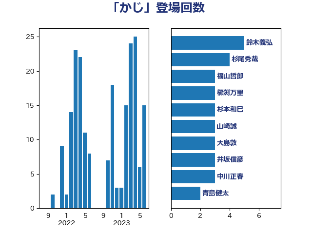

単語「かじ」

| 鈴木義弘 | 国民民主党 | 5 回 |
| 杉尾秀哉 | 立憲民主党 | 4 回 |
| 福山哲郎 | 立憲民主党 | 3 回 |
| 櫛渕万里 | れいわ新選組 | 3 回 |
| 杉本和巳 | 日本維新の会 | 3 回 |
| 山崎誠 | 立憲民主党 | 3 回 |
| 大島敦 | 立憲民主党 | 3 回 |
| 井坂信彦 | 立憲民主党 | 3 回 |
| 中川正春 | 立憲民主党 | 3 回 |
| 青島健太 | 日本維新の会 | 2 回 |
| 野田佳彦 | 立憲民主党 | 2 回 |
| 足立康史 | 日本維新の会 | 2 回 |
| 西村智奈美 | 立憲民主党 | 2 回 |
| 西岡秀子 | 国民民主党 | 2 回 |
| 藤巻健太 | 日本維新の会 | 2 回 |
| 舟山康江 | 国民民主党 | 2 回 |
| 笠井亮 | 日本共産党 | 2 回 |
| 石井章 | 日本維新の会 | 2 回 |
| 渡辺周 | 立憲民主党 | 2 回 |
| 浅野哲 | 国民民主党 | 2 回 |
| 柚木道義 | 立憲民主党 | 2 回 |
| 志位和夫 | 日本共産党 | 2 回 |
| 川田龍平 | 立憲民主党 | 2 回 |
| 川合孝典 | 国民民主党 | 2 回 |
| 小野泰輔 | 日本維新の会 | 2 回 |
| 寺田静 | 無所属 | 2 回 |
| 宮本岳志 | 日本共産党 | 2 回 |
| 宮口治子 | 立憲民主党 | 2 回 |
| 和田有一朗 | 日本維新の会 | 2 回 |
| 吉良よし子 | 日本共産党 | 2 回 |
| 加藤勝信 | 自由民主党 | 2 回 |
| 倉林明子 | 日本共産党 | 2 回 |
| 伊藤岳 | 日本共産党 | 2 回 |
| 伊藤俊輔 | 立憲民主党 | 2 回 |
| 井上哲士 | 日本共産党 | 2 回 |
| 一谷勇一郎 | 日本維新の会 | 2 回 |
| 黄川田仁志 | 自由民主党 | 1 回 |
| 高良鉄美 | 無所属 | 1 回 |
| 高橋千鶴子 | 日本共産党 | 1 回 |
| 高木かおり | 日本維新の会 | 1 回 |
| 馬場伸幸 | 日本維新の会 | 1 回 |
| 青柳仁士 | 日本維新の会 | 1 回 |
| 青木愛 | 立憲民主党 | 1 回 |
| 長妻昭 | 立憲民主党 | 1 回 |
| 長友慎治 | 国民民主党 | 1 回 |
| 鈴木宗男 | 日本維新の会 | 1 回 |
| 金村龍那 | 日本維新の会 | 1 回 |
| 金子道仁 | 日本維新の会 | 1 回 |
| 金子恵美 | 立憲民主党 | 1 回 |
| 野村哲郎 | 自由民主党 | 1 回 |
| 野中厚 | 自由民主党 | 1 回 |
| 野上浩太郎 | 自由民主党 | 1 回 |
| 道下大樹 | 立憲民主党 | 1 回 |
| 進藤金日子 | 自由民主党 | 1 回 |
| 辻元清美 | 立憲民主党 | 1 回 |
| 越智俊之 | 自由民主党 | 1 回 |
| 赤嶺政賢 | 日本共産党 | 1 回 |
| 谷合正明 | 公明党 | 1 回 |
| 蓮舫 | 立憲民主党 | 1 回 |
| 菅直人 | 立憲民主党 | 1 回 |
| 芳賀道也 | 国民民主党 | 1 回 |
| 舩後靖彦 | れいわ新選組 | 1 回 |
| 紙智子 | 日本共産党 | 1 回 |
| 穂坂泰 | 自由民主党 | 1 回 |
| 福島伸享 | 無所属 | 1 回 |
| 福岡資麿 | 自由民主党 | 1 回 |
| 神谷宗幣 | 参政党 | 1 回 |
| 礒崎哲史 | 国民民主党 | 1 回 |
| 石川香織 | 立憲民主党 | 1 回 |
| 石川昭政 | 自由民主党 | 1 回 |
| 石井苗子 | 日本維新の会 | 1 回 |
| 石井啓一 | 公明党 | 1 回 |
| 田村智子 | 日本共産党 | 1 回 |
| 田嶋要 | 立憲民主党 | 1 回 |
| 玉木雄一郎 | 国民民主党 | 1 回 |
| 玄葉光一郎 | 立憲民主党 | 1 回 |
| 片山大介 | 日本維新の会 | 1 回 |
| 江田憲司 | 立憲民主党 | 1 回 |
| 武部新 | 自由民主党 | 1 回 |
| 森屋宏 | 自由民主党 | 1 回 |
| 梅谷守 | 立憲民主党 | 1 回 |
| 柴田巧 | 日本維新の会 | 1 回 |
| 松川るい | 自由民主党 | 1 回 |
| 東国幹 | 自由民主党 | 1 回 |
| 本庄知史 | 立憲民主党 | 1 回 |
| 朝日健太郎 | 自由民主党 | 1 回 |
| 日下正喜 | 公明党 | 1 回 |
| 徳永久志 | 無所属 | 1 回 |
| 徳永エリ | 立憲民主党 | 1 回 |
| 庄子賢一 | 公明党 | 1 回 |
| 岸田文雄 | 自由民主党 | 1 回 |
| 岩谷良平 | 日本維新の会 | 1 回 |
| 岩渕友 | 日本共産党 | 1 回 |
| 岡田克也 | 立憲民主党 | 1 回 |
| 山際大志郎 | 自由民主党 | 1 回 |
| 山田美樹 | 自由民主党 | 1 回 |
| 山田勝彦 | 立憲民主党 | 1 回 |
| 山本順三 | 自由民主党 | 1 回 |
| 山本太郎 | れいわ新選組 | 1 回 |
| 山本博司 | 公明党 | 1 回 |
| 山下芳生 | 日本共産党 | 1 回 |
| 小池晃 | 日本共産党 | 1 回 |
| 小川淳也 | 立憲民主党 | 1 回 |
| 小宮山泰子 | 立憲民主党 | 1 回 |
| 宮本徹 | 日本共産党 | 1 回 |
| 奥野総一郎 | 立憲民主党 | 1 回 |
| 大石あきこ | れいわ新選組 | 1 回 |
| 堂込麻紀子 | 無所属 | 1 回 |
| 吉田統彦 | 立憲民主党 | 1 回 |
| 吉田久美子 | 公明党 | 1 回 |
| 吉川元 | 立憲民主党 | 1 回 |
| 勝部賢志 | 立憲民主党 | 1 回 |
| 勝俣孝明 | 自由民主党 | 1 回 |
| 前原誠司 | 国民民主党 | 1 回 |
| 保岡宏武 | 自由民主党 | 1 回 |
| 佐藤正久 | 自由民主党 | 1 回 |
| 佐藤啓 | 自由民主党 | 1 回 |
| 住吉寛紀 | 日本維新の会 | 1 回 |
| 伊藤孝恵 | 国民民主党 | 1 回 |
| 井原巧 | 自由民主党 | 1 回 |
| 中川宏昌 | 公明党 | 1 回 |
| 中司宏 | 日本維新の会 | 1 回 |
| 上川陽子 | 自由民主党 | 1 回 |
| 三木圭恵 | 日本維新の会 | 1 回 |
| こやり隆史 | 自由民主党 | 1 回 |